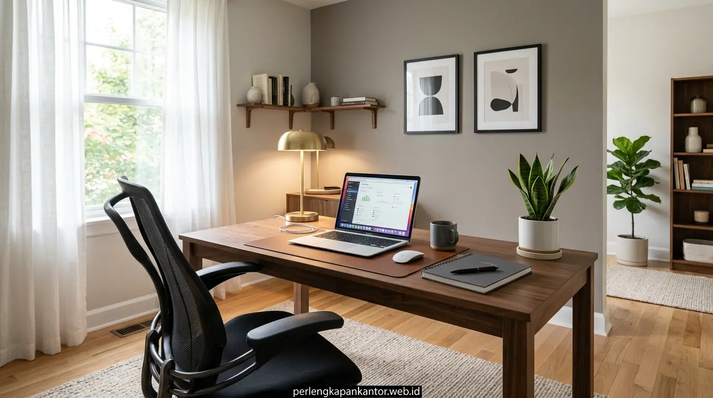

Warna cat dinding pada lingkungan perkantoran bukan sekadar elemen dekoratif visual, melainkan instrumen psikologis fundamental yang mempengaruhi suasana hati, stabilitas emosional, dan ketajaman kognitif karyawan. Dinding ruangan yang dilapisi warna tidak tepat dapat mempercepat kelelahan mata, memicu rasa kantuk, hingga meningkatkan sensitivitas terhadap stres kerja harian. Sebaliknya, pemilihan skema warna cat dinding kantor fokus yang dirancang secara ergonomis mampu mempertahankan gelombang otak pada frekuensi relaks namun waspada (alpha state), sehingga tim Anda dapat menyelesaikan tugas kompleks dengan presisi tinggi.
Bagaimana Psikologi Warna Dinding Mempengaruhi Kinerja Otak dan Konsentrasi Karyawan?
Respon visual terhadap spektrum warna secara langsung merangsang hipotalamus di otak yang mengatur hormon kortisol dan tingkat kewaspadaan mental para profesional di tempat kerja. Berdasarkan Global Workplace Psychology Survey 2025, sekitar 68% pekerja kantoran melaporkan bahwa skema warna ruangan yang tenang dan tidak menyilaukan meningkatkan daya tahan konsentrasi hingga 2,5 jam lebih lama tanpa jeda kelelahan mental. Selain itu, riset dalam Indonesia Commercial Office Design Report 2025 mengungkapkan bahwa perusahaan yang meremajakan warna interior ruang kerja dengan palet natural terukur mengalami penurunan tingkat stres visual karyawan sebesar 34%.
Ketika ruangan didominasi oleh warna-warna dengan panjang gelombang pendek seperti biru dan hijau, retina mata bekerja dengan tekanan akomodasi yang lebih ringan. Hal ini mencegah gejala mata lelah (digital eye strain), terutama bagi karyawan yang menatap monitor komputer selama lebih dari 8 jam sehari. Untuk menciptakan sinergi visual yang harmonis, penataan warna dinding harus diselaraskan dengan pemilihan perabot kerja berkualitas dari koleksi meja kantor ergonomis dan partisi modular yang tepat.
Rekomendasi Warna Cat Dinding Kantor Terbaik untuk Menunjang Produktivitas Tinggi
Kombinasi warna cat kantor yang tepat membagi fungsi zona kerja antara ruang fokus analitis, ruang rapat kolaboratif, dan area istirahat relaksasi yang nyaman. Berikut adalah empat kelompok palet warna paling direkomendasikan oleh konsultan tata ruang modern:
- 1. Soft Blue & Slate Grey (Biru Lembut & Abu-Abu Slate): Spektrum warna biru lembut dikenal luas sebagai pemicu ketenangan pikiran dan kejernihan berpikir logis. Sangat ideal diaplikasikan pada ruang divisi akuntansi, tim teknologi informasi (IT), dan ruang riset data yang menuntut ketelitian angka tanpa distraksi.
- 2. Sage Green & Olive Touch (Hijau Sage & Zaitun): Warna hijau sage mengadopsi nuansa biofilik alam yang menyegarkan mata lelah dan menstabilkan pernapasan. Warna ini sangat pas untuk ruang kerja fleksibel, workstation terbuka, maupun ruang kreatif.
- 3. Warm White & Greige (Putih Hangat & Abu-Abu Krem): Berbeda dengan putih steril yang menyilaukan, warm white memberikan kesan luas, bersih, dan lapang sekaligus memantulkan cahaya lampu secara lembut tanpa menimbulkan kilau tajam pada meja kerja.
- 4. Soft Terracotta & Warm Mustard (Aksen Dinding Kolaboratif): Digunakan secara terbatas (10-15% area) pada dinding fitur ruang rapat atau pantry untuk memicu energi antusiasme dan komunikasi interaktif tanpa menimbulkan kesan bunuh ruang.

Kombinasi dinding aksen biru navy elegan berpadu dengan workstation modern dari Perlengkapan Kantor untuk menciptakan lingkungan kerja prestisius.
Tabel Komparasi Pengaruh Warna Dinding Kantor Terhadap Suasana Kerja
Pemilihan warna dinding harus disesuaikan dengan jenis aktivitas utama yang berlangsung di setiap divisi kantor agar mendukung output kerja optimal:
| Kategori Warna | Rekomendasi Kode Rona | Efek Psikologis Utama | Zona Kantor Paling Cocok | Tingkat Refleksi Cahaya (LRV) |
|---|---|---|---|---|
| Soft Blue / Slate | Pastel Blue, Dusty Sky | Menenangkan denyut nadi, fokus analitis mendalam | Ruang Finansial, IT & Data Analyst | 55% – 65% (Sedang) |
| Sage Green | Muted Olive, Sage Leaf | Mengurangi kelelahan mata, keseimbangan emosi | Open Space Staff, Ruang Konsultasi | 50% – 60% (Seimbang) |
| Warm White / Greige | Ivory, Linen Cream, Greige | Memperluas persepsi ruang, bersih, fleksibel | Lobby, Koridor, Ruang Kerja Umum | 75% – 85% (Tinggi / Lembut) |
| Muted Navy (Aksen) | Classic Navy, Deep Ocean | Otoritas profesional, ketenangan berkelas | Ruang Direktur, Ruang Rapat Utama | 20% – 30% (Aksen Khusus) |
| Soft Terracotta (Aksen) | Warm Clay, Muted Peach | Membangkitkan antusiasme, kehangatan diskusi | Breakout Area, Pantry, Ruang Brainstorming | 40% – 50% (Hangat) |
Apa Saja Kesalahan Fatal dalam Memilih Cat Interior Ruang Kerja?
Banyak pemilik bisnis dan pengelola gedung terjebak pada asumsi keliru saat mengecat ulang dinding kantor. Berikut kesalahan umum yang wajib dihindari:
- Menggunakan Warna Putih Terlalu Silau (Pure Stark White): Putih dengan Light Reflectance Value (LRV) di atas 90% memantulkan cahaya lampu tabung secara liar ke layar laptop, menyebabkan silau seketika dan sakit kepala migrain pada staf.
- Dominasi Warna Merah Terang atau Kuning Neon: Meskipun dianggap energik, warna merah pekat memicu peningkatan detak jantung dan kecemasan jika terpapar terus-menerus di ruang kerja harian.
- Mengabaikan Arah Masuknya Cahaya Alami: Ruangan yang menghadap ke utara dengan sedikit sinar matahari membutuhkan warna bernuansa hangat (seperti warm beige), sedangkan ruangan dengan paparan matahari terik barat memerlukan rona sejuk (cool tone) untuk meredam hawa panas visual.
- Ketidaksesuaian Antara Dinding dan Material Furnitur: Dinding modern yang tidak cocok dengan warna finishing meja atau kursi kantor ergonomis akan merusak estetika profesional perusahaan.
Bagaimana Cara Memadukan Warna Dinding dengan Furnitur dan Partisi Kantor?
Harmoni visual ruang kantor tercapai saat dinding menjadi latar belakang elegan yang mempertegas fungsi dan kenyamanan furnitur di dalamnya. Anda dapat menerapkan rumus proporsi desain 60-30-10:
Gunakan 60% luas bidang untuk warna dasar dinding (seperti greige atau soft cream), 30% untuk warna furnitur utama seperti meja kerja kayu natural, lemari arsip besi abu-abu minimalis, dan kursi hitam ergonomis, serta 10% untuk aksen dinamis seperti panel akustik meja atau tanaman hias indoor. Dengan skema ini, ruang kerja terasa lapang, mewah, dan mendukung ritme kerja yang produktif.
Solusi Perancangan Tata Ruang dan Furnitur dari Perlengkapan Kantor
Menata kembali ruang kerja agar selaras antara estetika warna dinding dan fungsionalitas furnitur tidak perlu rumit. Perlengkapan Kantor hadir sebagai mitra terpercaya pengadaan peralatan kantor B2B yang menyediakan:
- Layanan Konsultasi Tata Ruang Gratis: Rekomendasi layout 2D/3D yang menggabungkan pencahayaan, sirkulasi udara, dan palet warna dinding ideal.
- Koleksi Furnitur Kantor Bergaransi Resmi: Pilihan meja staff, kursi ergonomis lumbar support, meja direktur, dan partisi akustik modular berkualitas tinggi.
- Skema Pengadaan Fleksibel: Layanan survei lokasi gratis se-Jabodetabek, faktur pajak resmi, serta opsi pembayaran bertahap (TOP B2B).
Pertanyaan Populer Seputar Pemilihan Warna Cat Kantor (FAQ)
Kesimpulan Praktis
Menentukan warna cat dinding kantor yang tepat merupakan investasi strategis dalam menciptakan ruang kerja yang produktif, nyaman, dan bebas stres. Padukan rona sejuk seperti sage green atau soft blue dengan furnitur ergonomis untuk mendongkrak performa kerja tim Anda.

Penulis: Tim Spesialis Perlengkapan Kantor
Divisi riset desain interior dan pengadaan furnitur profesional di Perlengkapan Kantor, berdedikasi menghadirkan panduan ergonomis, solusi efisiensi ruang kerja, dan kenyamanan lingkungan kantor modern.